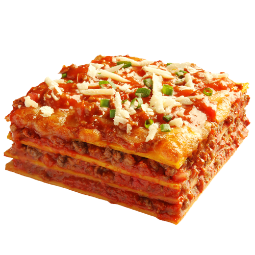

Receta para lasagna
Famoso plato italiano de receta compleja.

Ingredientes:
- 1 Cebolla
- 100g. de manteca
- 1.5L de leche
- 100g. de harina
- 500g. de pasta seca para lasagna
- 300g. de queso mozzarella en fetas
- 1kg. de carne picada
- 1 diente de ajo
- 200g. de espinaca
- 400cc. de salsa de tomate
- 200g. de queso parmesano rallado
- 300 fetas de jamon cocido
- 1 copa de vino blanco
- 1cda. de nuez moscada
Preparación de la salsa Bechamel:
- Calentar en una olla la leche con la harina. Mezclar bien hasta disolver la misma.
- Agregar la manteca, sal, pimienta blanca y nuez moscada rallada.
- Revolver constantemente hasta que espese.
Para el relleno de carne:
- Picar la cebolla, rallar el diente de ajo. Sudar en una cacerola con aceite de oliva
- Agregar la carne picada, sellar hasta que este cocida.
- Desglasar con el vino blanco.
Para el armado:
- Disponer una capa de salsa de tomate en el fondo del molde.
- Intercalar capas de pasta, de carne, salsa de tomate, salsa bechamel, espinaca, jamón y muzarella.
- Terminar con una capa de salsa bechamel, con mucho queso parmesano rallado.
- Llevar a horno a 180° por 10 minutos para gratinar y terminar la cocción de la misma.